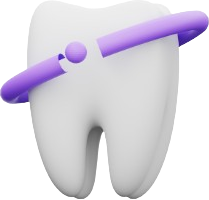

Protodent
Protocolo guia sobre cancer oral
Bienvenido a Protodent

1. Sospecha de lesión pre maligna/maligna
1.1 Realización de historia clínica
1.2 Caracterización de grupo de riesgo
1.2.1 Edad avanzada
1.2.2 Alcoholismo
1.2.3 Tabaquismo
1.2.4 Antecedentes de área comprometida
1.3 Historia de dolor, sangrado, dificultad o dolor en la apertura bucal
1.4 Palpación en la zona cervical, piso de boca, lengua y paladar
1.5 Análisis clínico (visual)
1.6 Identificar lo anormal (lesiones típicas de patologías malignas)
2. Identificar los posibles indicios que causan la lesión
2.1 Lesiones tipo friccional
2.2 Lesiones por agentes irritantes
2.3 Lesiones causadas por exposición (ej: sol)
3. Realización de biopsia dependiendo de la lesión
3.1 Aspiración con aguja fina
3.2 Biopsia por raspado
3.3 Biopsia con socavado
3.4 Biopsia incisional
3.5 Biopsia escisional
3.6 Citología exfoliativa
4. Derivación al especialista y tratar la causa
4.1 Eliminación de los factores predisponentes del paciente
4.2 Remisión del paciente al especialista con los resultados de la biopsia realizada
5. Eliminación de la lesión premaligna y/o maligna
Eliminación de la lesión premaligna y/o maligna
6. Seguimiento cada 6 meses por control
Seguimiento cada 6 meses por control